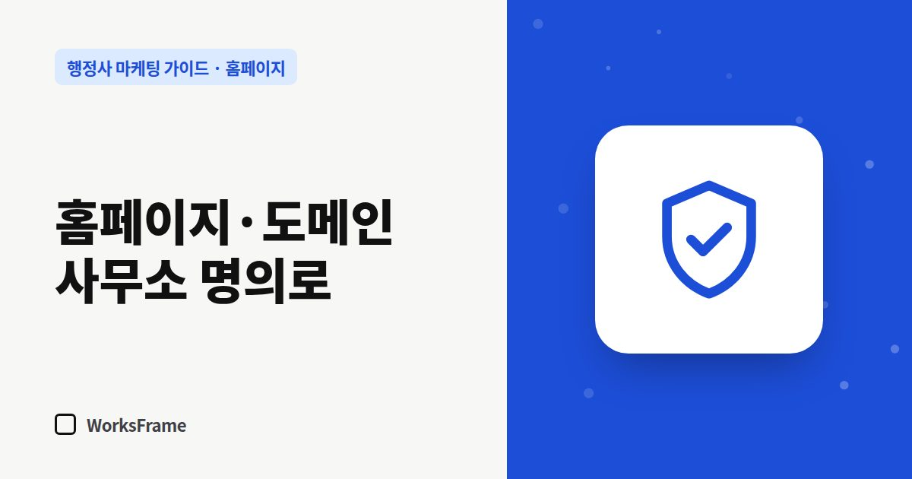

홈페이지
홈페이지·도메인·계정은 사무소 명의로 — 나중에 곤란하지 않으려면
한 줄 답
도메인·호스팅·네이버·구글·카톡 채널 계정은 모두 사무소 명의로 만드세요. 업체에는 비밀번호 대신 ‘관리자 권한’만 주면 됩니다.

“제작 업체와 연락이 안 되는데 홈페이지 수정은 어떻게 하죠?” 생각보다 흔한 일입니다. 도메인과 계정이 업체 명의로 되어 있으면, 사무소 홈페이지인데도 사무소가 손댈 수 없게 됩니다.
사무소 명의로 둬야 할 것
| 항목 | 이유 |
|---|---|
| 도메인 | 주소를 잃으면 명함·간판·플레이스의 주소가 모두 끊김 |
| 호스팅·빌더 계정 | 사이트 파일과 결제 권한 |
| 네이버 스마트플레이스 | 사무소 정보 수정, 리뷰 답글 |
| 구글 비즈니스 프로필 | 구글 지도 정보 |
| 카카오톡 채널 | 상담 기록, 채널 친구 |
| 서치어드바이저·서치 콘솔 | 검색 등록과 통계 |
| 방문 통계 도구 | 방문 기록 |
업체에 맡길 때는 ‘관리자 추가’로
대부분의 서비스는 소유자는 그대로 두고 다른 사람을 관리자로 추가하는 기능이 있습니다. 업체에는 비밀번호를 넘기지 말고 관리자 권한을 주세요. 계약이 끝나면 권한만 빼면 됩니다.
계정 정보 보관법
- 계정 목록을 한 장에 정리 (서비스, 아이디, 복구 이메일, 결제 수단, 갱신일)
- 비밀번호는 비밀번호 관리 앱이나 안전한 곳에
- 복구 이메일·전화번호가 사무소 것인지 확인
- 도메인 갱신일은 일정 앱에 알림
이미 업체 명의로 되어 있다면
- 업체에 도메인 이전(소유자 변경)과 계정 이전을 요청
- 사이트 파일 백업 요청
- 네이버·구글 계정은 소유자 이전 또는 사무소 계정을 소유자로 추가
자주 묻는 질문
구독형 서비스도 사무소 명의로 할 수 있나요?
서비스마다 다릅니다. 계약 전에 “해지하면 도메인과 파일은 어떻게 되나요?”를 꼭 물어보고 문서로 받아 두세요.
가족 명의로 해도 되나요?
사무소 운영과 관련된 계정은 사무소(대표 행정사 또는 사업자) 명의로 통일하는 편이 관리와 인증에 유리합니다.